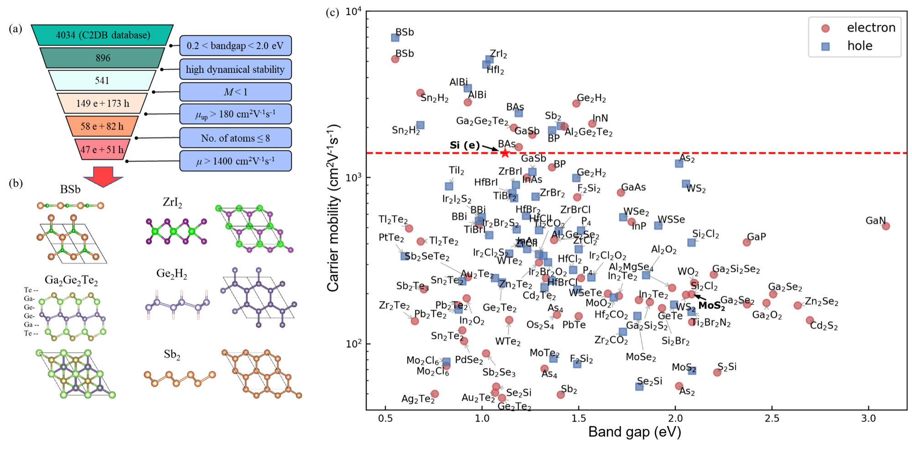

Two-dimensional (2D) semiconductors have demonstrated great potential for next-generation electronics and optoelectronics. An important property for these applications is the phonon-limited charge carrier mobility. The common approach to calculate the mobility from first principles relies on the interpolation of the electron-phonon coupling (EPC) matrix. However, it neglects the scattering by the quadrupoles generated by phonons, limiting its accuracy. Here we present a first-principles method to incorporate the quadrupole scattering, which results in a much better interpolation quality and thus a more accurate mobility as exemplified by monolayer MoS2 and InSe. This method also allows for a natural incorporation of the effects of the free carriers, enabling us to efficiently compute the screened EPC and thus the mobility for electrostatically doped semiconductors. Particularly, we find that the electron mobility of InSe is more sensitive to the carrier concentration than that of MoS2 due to the stronger long-range scattering in intrinsic InSe. With increasing electron concentration, the InSe mobility can reach ~4 times of the intrinsic value, then decrease owing to the involvement of heavier electronic states. Our work provides accurate and efficient methods to calculate the phonon-limited mobility in the intrinsic and electrostatically doped 2D materials, and improves the fundamental understanding of their transport mechanism.

Two-dimensional (2D) semiconductors have demonstrated great potential for next-generation electronics and optoelectronics. However, the current 2D semiconductors suffer from intrinsically low carrier mobility at room temperature, which significantly limits its applications. Here we discover a number of new 2D semiconductors with mobility one order of magnitude higher than the current ones. The discovery is made by formulating effective descriptors, applying them to computationally screen the 2D materials database, then using state-of-the-art first principles method to accurately calculate the mobility. Further analyses attribute their high mobilities to small effective mass, high sound velocity, high phonon frequency, small ratio of Born charge vs. polarizability, and/or weak electron-phonon coupling. Our work opens up new materials promising for electronic/optoelectronic applications, and improves the fundamental understanding of the transport mechanism.
[1] C. Zhang* and Y. Liu, Phonon-limited transport of two-dimensional semiconductors: Quadrupole scattering and free carrier screening. Physical Review B 106, 115423 (2022).
[2] C. Zhang*, R. Wang, H. Mishra, and Y. Liu, Two-Dimensional Semiconductors with High Intrinsic Carrier Mobility at Room Temperature. Physical Review Letters 130, 087001 (2023).